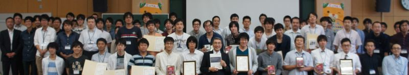

最終結果
エンベデッド部門
- 1位
- Shizuoka University Trax Solver
- 2位
- R.A.D.C
- 3位
- KumamoTrax
- 4位
- トラックス野郎一番星
- 5位
- K-Tra-X
- 6位
- 爆裂メラニン
一般部門
- 1位
- Shizuoka University Trax Solver II
- 2位
- 桑原和人
- 3位
- 菅原真
- 4位
- EHIME-NS
- 5位
- MOMILIO
- 6位
- 岡崎ジェットソン
特別賞
- スポンサー特別賞
- 菅原真
- 運営委員長特別賞
- KumamoTrax
- 運営委員特別賞
- 岡崎ジェットソン
決勝リーグ・勝敗表
エンベデッド部門
| EA | EB | ED | EH | EI | ER |
|---|
| EA:R.A.D.C | | EB | EA | EA | EA | EA |
|---|
| EB:Shizuoka U. Trax Solver | EB | | EB | EB | EB | EB |
|---|
| ED:爆裂メラニン | EA | EB | | ED | EI | ER |
|---|
| EH:トラックス野郎一番星 | EA | EB | ED | | EH | ER |
|---|
| EI:K-Tra-X | EA | EB | EI | EH | | ER |
|---|
| ER:KumamoTrax | EA | EB | ER | EH | EI | |
|---|
一般部門
| RB | RC | RF | RH | RJ | RN |
|---|
| RB:Shizuoka U. Trax Solver II | | RB | RB | RB | RB | RB |
|---|
| RC:MOMILIO | RB | | RF | RC | RC | RN |
|---|
| RF:桑原和人 | RB | RF | | RF | RF | RF |
|---|
| RH:岡崎ジェットソン | RB | RC | RF | | RJ | RH |
|---|
| RJ:菅原 真 | RB | RJ | RJ | RJ | | RJ |
|---|
| RN:EHIME-NS | RB | RN | RF | RN | RN | |
|---|
予選リーグ・勝敗表
エンベデッド部門
エンベデッド部門リーグA
| EL | ED | EF | EG | EQ | EB |
|---|
| EL:BlackSE | | ED | EF | EG | - | EB |
|---|
| ED:爆裂メラニン | EL | | ED | ED | - | EB |
|---|
| EF:BLUE STORM | EF | ED | | EF | - | EB |
|---|
| EG:PulseR | EL | ED | EF | | - | EB |
|---|
| EQ:Lila.cs | - | - | - | - | - | - |
|---|
| EB:Shizuoka U. Trax Solver | EB | EB | EB | EB | - | |
|---|
エンベデッド部門リーグB
| ER | EA | EM | EJ | EK | EP |
|---|
| ER:KumamoTrax | | ER | ER | EJ | ER | ER |
|---|
| EA:R.A.D.C | EA | | EA | EA | EA | EA |
|---|
| EM:framboisePi | ER | EA | | EJ | EK | EM |
|---|
| EJ:岡崎ジェットソン | ER | EA | EJ | | EJ | EJ |
|---|
| EK:The MOMONGA | ER | EA | EM | EJ | | EP |
|---|
| EP:T.A.I | ER | EA | EP | EP | EP | |
|---|
エンベデッド部門リーグC
| EH | EN | EO | EE | EI |
|---|
| EH:御意見無用トラックス一番星 | | EH | EH | EH | EH |
|---|
| EN:Jetsonみきゃんさん | EH | | EO | EN | EI |
|---|
| EO:Athena | EH | EO | | EO | EI |
|---|
| EE:せんとぼーいず | EH | EN | EO | | EI |
|---|
| EI:K-Tra-X | EH | EI | EI | EI | |
|---|
一般部門
一般部門リーグA
| RJ | RN | RK | RQ | RG |
|---|
| RJ:菅原真 | | RN | RJ | RJ | RJ |
|---|
| RN:EHIME-NS | RN | | RN | RN | RN |
|---|
| RK:The tower of RaspberryPi | RJ | RN | | RK | RK |
|---|
| RQ:lesser | RJ | RN | RQ | | RQ |
|---|
| RG:MISH | RJ | RN | RK | RQ | |
|---|
一般部門リーグB
| RH | RC | RM | RE | RI | RA |
|---|
| RH:岡崎ジェットソン | | RH | RM | RE | RH | - |
|---|
| RC:MOMILIO | RC | | RC | RC | RC | - |
|---|
| RM:the strong | RH | RC | | RE | RI | - |
|---|
| RE:西谷旦 | RH | RC | RE | | RI | - |
|---|
| RI:traxee | RH | RC | RM | RE | | - |
|---|
| RA:ERTL | - | - | - | - | - | |
|---|
一般部門リーグC
| RF | RP | RL | RB | RD |
|---|
| RF:桑原和人 | | RF | RF | RB | RF |
|---|
| RP:S.Kaiser | RF | | RP | RB | RD |
|---|
| RL:KKマン | RF | RL | | RB | RD |
|---|
| RB:SHizuoka U Trax Solver II | BJ | RB | RB | | RB |
|---|
| RD:鎌田雅和 | RF | RD | RD | RB | |
|---|